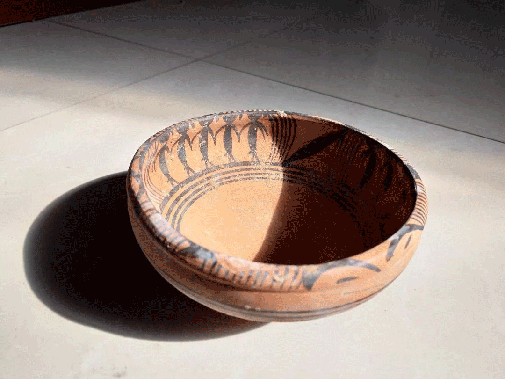
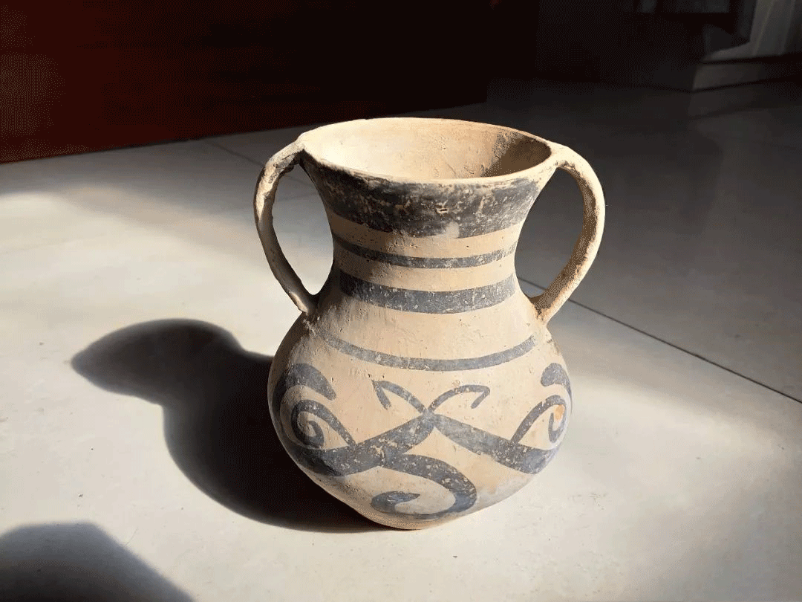

自幼酷爱绘画雕刻，为人低调谦和，兴趣爱好广泛，涉素描、书法、印刻、木雕、石雕， 尤其是马家窑彩陶原始仿制技艺，堪称一绝无人能及，在洮河沿岸千年文明在他手里再现辉煌， 传承与发展精质量魅力彩陶，其仿制各类彩陶，马家窑、齐家、辛店、半山、大地湾等彩陶， 得到了国内外专家学者的认可和赞誉，先后多次受邀参加国内外考察学习及参展， 受到研究彩陶领域人士的极高评价；1985年赴西藏日喀则学习传统藏陶制技艺； 1995年返乡将藏陶制作的方法和技艺运用于各类仿古彩陶制作。 其用古法仿制的彩陶较完整的保留了原始先民烧制陶器的方法和技艺，作品与出土器相似程度极高； 2013年联合国世界教科文组织命名张文荣先生马家窑原始彩陶传承人； 近年来，临洮政府大力支持和资助，张先生先后多次被评为多个优秀和奖项。 多年来，张先生为马家窑彩陶发展与传承做出了自己的贡献和精力，并培育长女继承技艺发展传承；
 